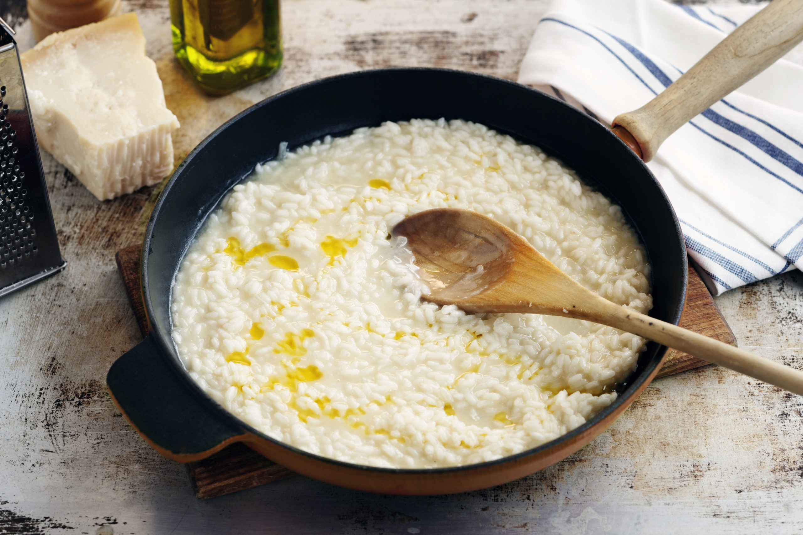

Risotto

Description
Really tasty. Don't cut down on the cheese.
Ingredients
- Risotto rice
- Parmigiano
- Bouillon
- Salt
- Dry white wine
Steps
>
- Fry the rice until its golden
- Add some white wine
- Add 2 deciliters of buillon, add again when dried up until the rice has good texture
- Add the parmigiano
Not feeling for risotto? Go back and check out the other recipes.